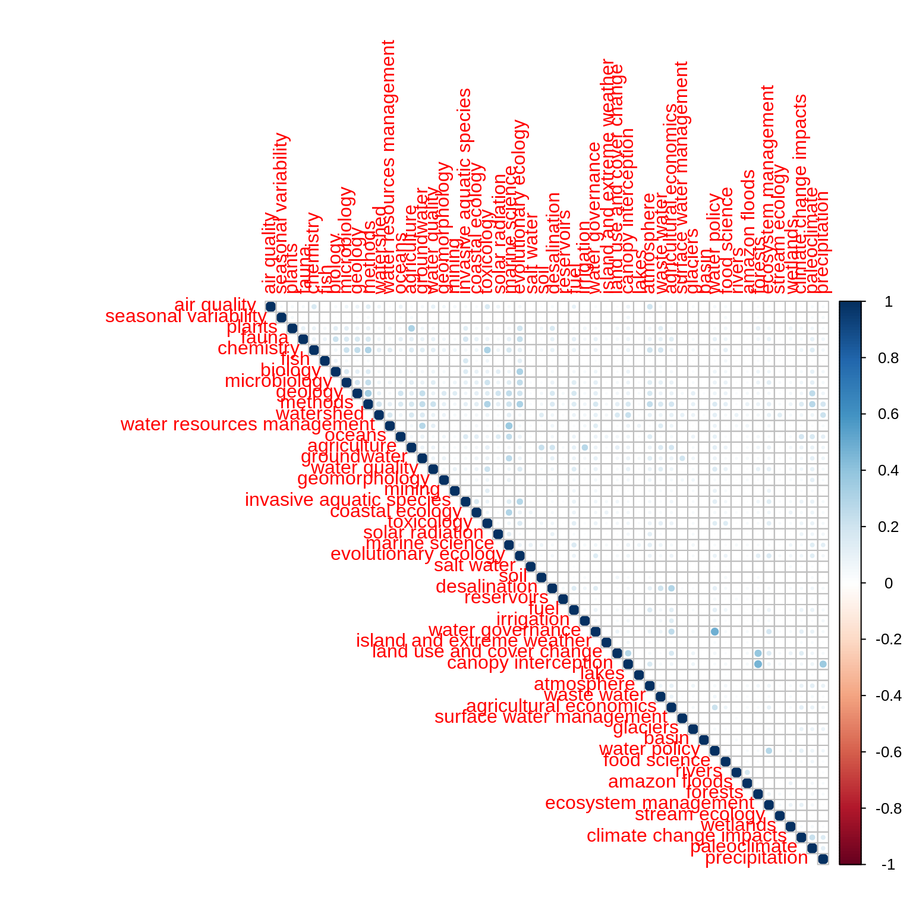
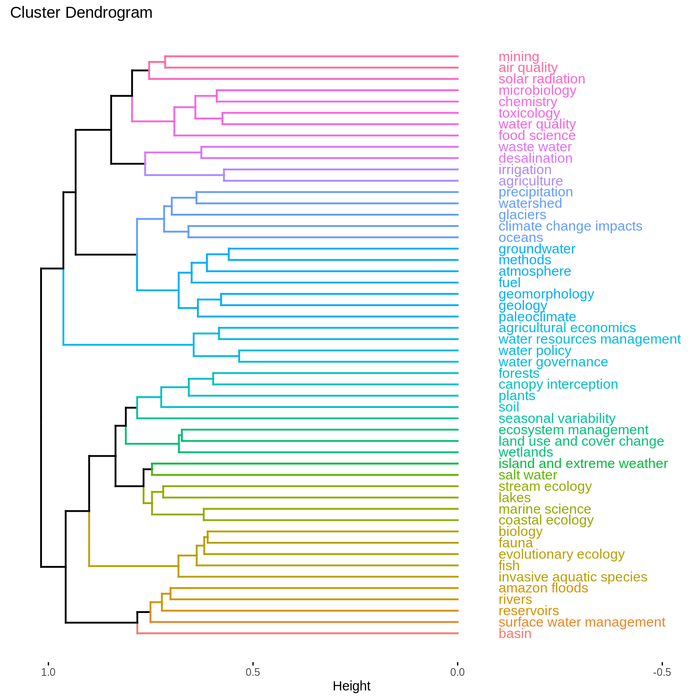
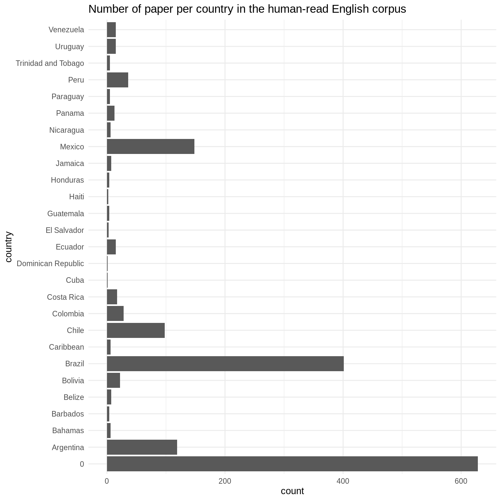

validation.RmdIn this vignette, we perform validation on the LDA models, using two approaches: post-hoc data analysis and human-reading.
First, we retrieve the data: the distribution of words in topic, topicWords and the human-derived topics names. From these, we derive a distance matrix based on the Jensen-Shannon divergence.
topicWords <- readRDS(system.file("extdata", "topicWords.Rds", package = "wateReview")) topic_names <- read.csv(system.file("extdata", "topic_names.csv", package = "wateReview")) topic_names <- topic_names[match(seq(nrow(topic_names)), topic_names$topic_id), ] topicWords <- t(topicWords) topicWords <- as.data.frame(topicWords) colnames(topicWords) <- topic_names$topic_name theme_type <- "theme" themes <- unique(topic_names[[theme_type]][!is.na(topic_names[[theme_type]])]) theme_df <- lapply(themes, function(th){ ind <- which(topic_names[[theme_type]] == th) if (length(ind) == 1){ return(topicWords[, ind]) } else { return(rowSums(topicWords[, ind])) } }) theme_df <- do.call(cbind, theme_df) rownames(theme_df) <- rownames(topicWords) colnames(theme_df) <- themes rm(topicWords) cSums <- colSums(theme_df) theme_df <- sweep(theme_df, 2, cSums, "/") theme_df <- t(theme_df) dist_theme_JS <- philentropy::distance(theme_df, method = "jensen-shannon") #> Metric: 'jensen-shannon' using unit: 'log'; comparing: 52 vectors. dist_theme_JS <- sqrt(dist_theme_JS) rownames(dist_theme_JS) <- rownames(theme_df) colnames(dist_theme_JS) <- rownames(theme_df)
The following corrrelation matrix displays a very low level of Pearson’s correlation across the distribution of topics over words. This means that topics likely capture distinct components of the corpus content.
mat <- as.matrix(t(theme_df)) correlations <- Hmisc::rcorr(mat, type = "pearson") correlations$r[which(correlations$P > 0.05)] <- 0 corrplot(correlations$r, type = "upper")

A dendrogram visualization of a hierarchical clustering with Ward’s criterion underlines that topics expected to have similar distributions over words are closer to one another. See for example the topics agricultural economics, water resources management, water policy and water governance in the middle of the dendrogram.
hc_fit <- hclust(as.dist(dist_theme_JS), method = "ward.D2") fviz_dend(hc_fit, k = NULL, h = 0.75, show_labels = TRUE, cex = 0.8, horiz = TRUE, labels_track_height = 0.5)

library(openxlsx)
We retrieve the validation data from all the 12 human readers from english_validation.xlsx, a table transferred from Google Calc to Excell format. We also load a number of look-up levels to make the cross-walk between the human-identified country labels and unified country labels.
xlsxFile <- system.file("extdata", "english_validation.xlsx", package = "wateReview") l.df <- lapply(seq(12), function(i){ df <- read.xlsx(xlsxFile, sheet = i, skipEmptyCols = TRUE, skipEmptyRows = TRUE, rows = 1:50, colNames = FALSE, rowNames = FALSE) df <- buffer(df, 50, fill = NA) return(df[, -1]) }) df <- do.call(cbind, l.df) colnames(df) <- paste0("X", seq(ncol(df))) ind <- apply(df, MARGIN = 1, function(row) !all(is.na(row))) df <- df[ind, ] rownames(df) <- c("title", "validation", "country_location", "state", "basin_location", "city", "study_years", "event", "day", "week", "year", "years_10", "years_100", "years_1000", "years_10000", "years_100000", "agricultural_field", "aquifer_groundwater", "basin_scale", "catchment _watershed", "city_urban", "coastal", "country_scale", "dam_reservoir", "glacier_alpine", "hydrologic_region", "irrigation_district", "lake", "ocean_sea", "river_stream", "rural", "wetland", "topic.1", "topic.2", "topic.3", "topic.4", "topic.5", paste0("funding.", seq(1:(nrow(df)-37)))) df <- data.frame(t(df)) df$country_location[is.na(df$country_location)] <- 0 df$country_location[df$country_location == " 0"] <- 0 lookup_table <- read.csv(system.file("extdata", "lookup_lvls.csv", package = "wateReview"))[, -1] df <- cbind(df, lookup_table[as.numeric(df$country_location), ]) df$title <- unlist(sapply(df$title, function(ttl) paste(unlist(strsplit(as.character(ttl), "_"))[-1], collapse = "_"))) keeps <- c("title", "validation", "country_location", paste0("Country.", 1:8)) head(df) #> title validation #> X1 Gagern-2013-A critical review of fishing agree.pdf 1 #> X2 Medina-2009-Future directions of Chilean ecoto.pdf <NA> #> X3 Handiani-2013-Tropical vegetation response to.pdf 0 #> X4 Toledo-2011-Patterns and Determinants of Flori.pdf 1 #> X5 Ngodock-2007-Cycling the representer algorithm.pdf 1 #> X6 Beharry-Borg-2009-An Analytical Framework for.pdf 0 #> country_location state basin_location city study_years event #> X1 0 <NA> <NA> <NA> 1961-2006 1 #> X2 0 <NA> <NA> <NA> <NA> <NA> #> X3 Brazil, West African Countries <NA> <NA> <NA> 0 1 #> X4 Bolivia <NA> <NA> <NA> 1995-2007 0 #> X5 Gulf of Mexico <NA> <NA> <NA> <NA> 0 #> X6 Trinidad and Tobago <NA> <NA> Tobago <NA> 1 #> day week year years_10 years_100 years_1000 years_10000 years_100000 #> X1 0 0 0 1 0 0 0 0 #> X2 <NA> <NA> <NA> <NA> <NA> <NA> <NA> <NA> #> X3 0 0 0 0 1 0 0 0 #> X4 0 0 0 1 0 0 0 0 #> X5 0 0 0 0 0 0 0 0 #> X6 0 0 0 0 0 0 0 0 #> agricultural_field aquifer_groundwater basin_scale catchment._watershed #> X1 1 0 0 0 #> X2 <NA> <NA> <NA> <NA> #> X3 0 1 0 0 #> X4 1 0 0 0 #> X5 0 0 0 0 #> X6 0 0 0 0 #> city_urban coastal country_scale dam_reservoir glacier_alpine #> X1 0 1 0 0 0 #> X2 <NA> <NA> <NA> <NA> <NA> #> X3 0 0 0 0 0 #> X4 0 0 0 0 0 #> X5 0 0 0 0 0 #> X6 0 0 0 0 0 #> hydrologic_region irrigation_district lake ocean_sea river_stream rural #> X1 0 0 0 1 0 0 #> X2 <NA> <NA> <NA> <NA> <NA> <NA> #> X3 0 0 0 0 0 0 #> X4 0 0 0 0 0 0 #> X5 0 0 0 1 0 0 #> X6 0 0 0 1 0 0 #> wetland topic.1 topic.2 topic.3 topic.4 #> X1 0 fishing <NA> <NA> <NA> #> X2 <NA> <NA> <NA> <NA> <NA> #> X3 0 tropical vegetation climate change HE1 <NA> #> X4 0 species distribution climate change rainfall <NA> #> X5 0 ocean modeling representer method loop current eddies <NA> #> X6 0 choice experiment couples <NA> <NA> #> topic.5 funding.1 #> X1 <NA> Becas de Formacion de Profesorado Universitario #> X2 <NA> <NA> #> X3 <NA> Deutsche Forschungsgemeinschaft #> X4 <NA> Netherlands foundation for the advancement of tropical research #> X5 <NA> Office of Naval Research #> X6 <NA> <NA> #> funding.2 #> X1 <NA> #> X2 <NA> #> X3 <NA> #> X4 Russell E. Train Education for Nature #> X5 <NA> #> X6 <NA> #> funding.3 #> X1 <NA> #> X2 <NA> #> X3 <NA> #> X4 International Foundation for Science IFS #> X5 <NA> #> X6 <NA> #> funding.4 funding.5 funding.6 funding.7 #> X1 <NA> <NA> <NA> <NA> #> X2 <NA> <NA> <NA> <NA> #> X3 <NA> <NA> <NA> <NA> #> X4 Wageningen Univesity and Research Center <NA> <NA> <NA> #> X5 <NA> <NA> <NA> <NA> #> X6 <NA> <NA> <NA> <NA> #> funding.8 funding.9 funding.10 Country.1 Country.2 Country.3 #> X1 <NA> <NA> <NA> 0 #> X2 <NA> <NA> <NA> 0 #> X3 <NA> <NA> <NA> Brazil #> X4 <NA> <NA> <NA> Bolivia #> X5 <NA> <NA> <NA> 0 #> X6 <NA> <NA> <NA> Trinidad and Tobago #> Country.4 Country.5 Country.6 Country.7 Country.8 #> X1 #> X2 #> X3 #> X4 #> X5 #> X6
For convenience in other scripts, the following chunk split the validation information between location, spatial scale, temporal scale and funding.
write.csv(df[, colnames(df) %in% keeps], "validation_df_location.csv", row.names = FALSE)
write.csv(df[, c(1, 2, 3, 17:32)], "validation_df_spatial.csv", row.names = FALSE)
write.csv(df[, c(1, 2, 3, 7:16)], "validation_df_temporal.csv", row.names = FALSE)
fundings <- as.matrix(df[, grep("funding", colnames(df))])
dim(fundings) <- NULL
fundings <- data.frame(funding = unique(fundings))
write.csv(fundings, "funding.csv", row.names = FALSE)The country distribution identified from human-reading matches the expectation from the electronic survey and corpus collection.
countries <- as.matrix(df[, grepl("Country.", colnames(df))]) dim(countries) <- NULL countries <- countries[countries != ""] countries <- data.frame(country = countries) ggplot(countries, aes(x = country)) + geom_bar() + coord_flip() + theme_minimal() + labs(x = "country", title = "Number of paper per country in the human-read English corpus")

statistics <- sort(signif(table(countries[countries != 0]) / sum(table(countries[countries!= 0])) * 100, 2), decreasing = TRUE) print(statistics) #> #> Brazil Mexico Argentina Chile #> 41.00 15.00 12.00 9.90 #> Peru Colombia Bolivia Costa Rica #> 3.60 2.80 2.20 1.70 #> Ecuador Uruguay Venezuela Panama #> 1.50 1.50 1.50 1.30 #> Belize Jamaica Bahamas Caribbean #> 0.71 0.71 0.61 0.61 #> Nicaragua Paraguay Trinidad and Tobago Barbados #> 0.61 0.51 0.51 0.40 #> Guatemala Honduras El Salvador Haiti #> 0.40 0.40 0.30 0.20 #> Cuba Dominican Republic #> 0.10 0.10
library(dplyr) #> #> Attaching package: 'dplyr' #> The following objects are masked from 'package:stats': #> #> filter, lag #> The following objects are masked from 'package:base': #> #> intersect, setdiff, setequal, union validation_table <- df %>% pull(validation) %>% table() validation_table$notfound <- sum(tail(validation_table, -2)) #> Warning in validation_table$notfound <- sum(tail(validation_table, -2)): #> Coercing LHS to a list
The agreement between human topics and LDA topics was performed using LDA visualization and flagged for articles relevant to the study. 32 documents were not found, pointing at issues of cross-walk between the titles in LDA and EndNote databases. 719 documents were in aggreement between the topic model and the human-reading; 116 documents were in disaggreement (86.1% aggreement).